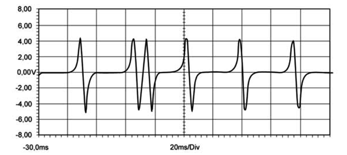
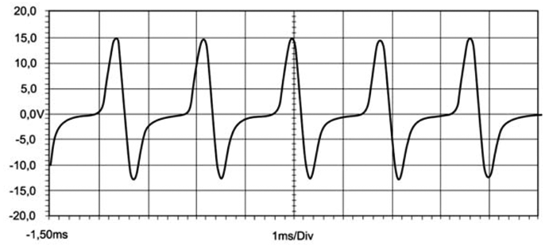

Descrição da Falha
Indicação da
rotação do motor, sinal muito alto.
Indicação de Falha
Luz de alerta acende constantemente
com os símbolos  e e  e
ativa o alarme sonoro longo, com o veículo andando ou parado. e
ativa o alarme sonoro longo, com o veículo andando ou parado.
A LIM permanece desligada.
Estratégia de Monitoramento
O Módulo EDC7 monitora o sensor de
rotação do eixo comando e o sensor de rotação do virabrequim.
Efeito da Falha
Em caso de perda de sinal de um dos
sensores, a partida será mais demorada. Se perder o sinal dos dois
sensores, o motor não liga. Se o motor tiver funcionando e perder o
sinal de um dos sensores, acenderá a luz de aviso e manterá o
funcionamento e em caso de perda dos dois sinais o motor desliga.
Possíveis Falhas
FMI 1: Sinal muito alto.
FMI 3: Sinal implausível (veja o
quadro AVISO ).
FMI 4: Sem qualquer sinal.
FMI 8: Falha de sinal.
Sensor com defeito.
Aviso
  Se o motor
for desligado e a ignição for imediatamente religada ou se na hora de
dar partida no motor a chave de ignição for solta antes do motor pegar,
o contra golpe é reconhecido errôneamente como falha SPN 0190. Essa
falha com FMI 3 é uma condição do motor, estado de sincronização
inválida. A falha "monitoração de rotação do motor inválida" deve ser
ignorado. Neste caso, simplesmente apague a falha da memória do EDC7
através do procedimento com a MCO-08. Não é necessário substituir o
sensor de rotação. Se o motor
for desligado e a ignição for imediatamente religada ou se na hora de
dar partida no motor a chave de ignição for solta antes do motor pegar,
o contra golpe é reconhecido errôneamente como falha SPN 0190. Essa
falha com FMI 3 é uma condição do motor, estado de sincronização
inválida. A falha "monitoração de rotação do motor inválida" deve ser
ignorado. Neste caso, simplesmente apague a falha da memória do EDC7
através do procedimento com a MCO-08. Não é necessário substituir o
sensor de rotação.
Registros de Falhas em Outros
Módulos de Comando
Não.
Considerar os esquemas
elétricos do veículo
| Verificação
|
Medição |
Eliminação da
Falha |
|
Sensor de rotação do virabrequim
|
Utilize o Tester Box e consulte o manual Verificação EDC7 C32:
- Medir a resistência entre o pino A73 e o
pino A55
Valor nominal:
750 - 1100 Ω
|
– Através da MCO-08 verificar a plausibilidade do sinal e o
estado do sinal do regime de rotação
– Verificar os cabos quanto a rompimento
ou oxidação
– Verificar as conexões quanto a mau
contato ou pinos tortos
– Substituir o sensor de rotação
|
|
Sensor de rotação do eixo comando
|
Utilize o Tester Box e consulte o manual Verificação EDC7 C32:
- Medir a resistência entre o pino A73 e o
pino A55
Valor nominal:
750 - 1100 Ω
|
|
Sinal de rotação
|
Utilize o Tester Box e consulte o manual Verificação EDC7 C32:
- Medir a resistência entre o pino A72 e
o pino A54
Valor nominal:
ver curvas do osciloscópio
|
|
Distância entre o sensor de rotação e o
volante do motor
|
Valor nominal:
0,5 - 1,5 mm
|
–
Verificar o sensor se está corretamente instalado |
Curvas do osciloscópio
Sinal do sensor de rotação do eixo
comando medido a 600 min–1 entre os pinos A72 e A54.

Sinal do sensor de rotação do
virabrequim medido a 600 min–1 entre os pinos A73 e A55.

Tester Box

|